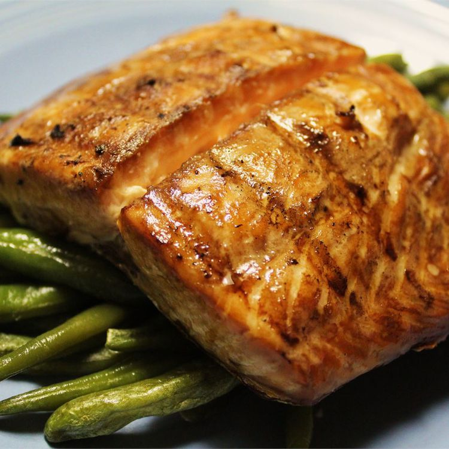

Grilled Salmon Recipe

Apparently this takes 2 hours and 25 minutes to make.
How about some Grilled Cheese and doing more Odin lessons instead?
Ingredients
- 1 1/2 pounds salmon fillets
- lemon pepper
- garlic powder
- salt
- 1/3 cup soy sauce
- 1/3 cup brown sugar
- 1/3 cup water
- 1/4 cup vegetable oil
How to make
- Season salmon fillets with lemon pepper, garlic powder and salt.
- Stir soy sauce, brown sugar, water and vegetable oil together until sugar dissolved.
- Place 🐟 in resealable plastic bag, and add soy mixture and seal. Refrigerate for at least 2 hours (????).
- Preheat outdoor grill for medium heat. Oil grate.
- Place salmon on grill, and discard marinade. Cook salmon for about 6 to 8 minutes per side.
- Eat :)
Take me back